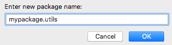
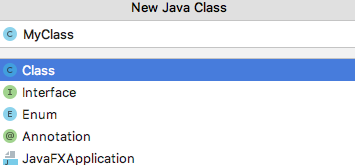
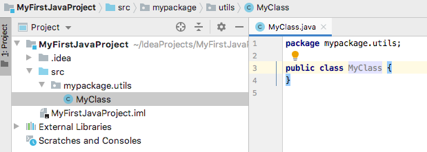
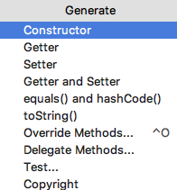

<!DOCTYPE html>
<html lang="es">
	<head>
		<meta charset="utf-8">
		<title>Managing complex projects</title>
		<meta name="viewport" content="width=device-width, initial-scale=1.0">
		<link rel="stylesheet" href="../../../reveal/dist/reveal.css">
		<link rel="stylesheet" href="../../../reveal/dist/theme/white.css" id="theme">
		<link rel="stylesheet" href="../../../reveal/plugin/highlight/custom.css">
	</head>

	<body>
		<div class="reveal">
			<div class="slides">
                <section data-markdown>
<script type="text/template">
## Object oriented programming
### Managing complex projects
</script>
</section>

<section data-markdown>
<script type="text/template">
## Real life projects

- A real life project consists of many different classes
- It's hard to keep all these classes in the same source file
- Many advanced IDEs help us manage projects with different source files
   - IntelliJ, Eclipse, NetBeans...

</script>
</section>
    
<section data-markdown>
<script type="text/template">
## First steps with IntelliJ

[Here](https://nachoiborraies.github.io/entornos/md/en/02d) you can see how to download and install it, and how to create Java projects
    
</script>
</section>
    
<section data-markdown>
<script type="text/template">
## Classes and packages

- **Package**: a way of arranging classes in Java projects, similar to folders
- Every package has a name. We use dots `.` to specify that a subpackage is inside another package
   - *javatest* would be a first level package
   - *mypackage.utils* represents a second level package (*utils*) placed inside a first level package (*mypackage*)

</script>
</section>

<section data-markdown>
<script type="text/template">
## Defining packages

Right click > *New* > *Package* over *src* folder

<div align="center">
	
</div>

</script>
</section>
    
<section data-markdown>
<script type="text/template">
## Adding classes and elements

- Every class in a Java project must belong to a package
   - Otherwise, Java assigns a default (empty) package to it, but it's difficult to compile it in some IDEs
- Right click on the package name and choose *New* > *Java Class*   

</script>
</section>
    
<section data-markdown>
<script type="text/template">
## Adding classes and elements

<div align="center">
	
</div>

</script>
</section>
    
<section data-markdown>
<script type="text/template">
## Adding classes and elements

<div align="center">
	
</div>

</script>
</section>
    
<section data-markdown>
<script type="text/template">
## Code generation

- IntelliJ help us add automatically:
   - Constructors
   - Getters / Setters
   - Other typical methods (*toString*, *equals*...)
- Through *Code* > *Generate* menu

</script>
</section>
    
<section data-markdown>
<script type="text/template">
## Code generation

<div align="center">
	
</div>

</script>
</section>
    
<section data-markdown>
<script type="text/template">
## Exercises

Do **exercises 1 to 5** of the document associated to these slides. 

</script>
</section>
    
            </div>
		</div>

		<script src="../../../reveal/dist/reveal.js"></script>
		<script src="../../../reveal/plugin/zoom/zoom.js"></script>
		<script src="../../../reveal/plugin/markdown/markdown.js"></script>
		<script src="../../../reveal/plugin/highlight/highlight.js"></script>
		<script>

			// Also available as an ES module, see:
			// https://revealjs.com/initialization/
			Reveal.initialize({
				controls: false,
				progress: false,
				center: true,
                hash: true,
                width: "80%",

				// Learn about plugins: https://revealjs.com/plugins/
				plugins: [ RevealZoom, RevealMarkdown, RevealHighlight ]
			});

		</script>

	</body>
</html>
